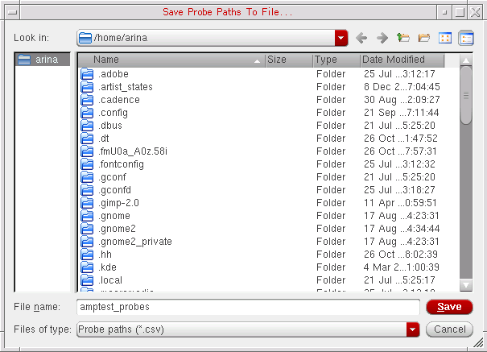

17
The Probes Assistant
This chapter describes the following topics:
- Introducing the Probes Assistant
- Accessing the Probes Assistant
- Hiding the Probes Assistant
- The Probes Assistant Graphical User Interface (GUI)
- Displaying Probed Nets in the Probes Assistant
- Controlling the Display in the Probes Assistant
- Saving Probe Paths to a File
- Removing a Probe or All Probes
- Context-Menu Options
Introducing the Probes Assistant
The Probes Assistant is a dockable assistant pane that provides facilities to view the probed nets across the design hierarchy.
When working on a design with probed nets, you may want to view the schematic hierarchy or the lib/cell/view of a specific probed net. For a simple design, you can effectively trace the probed net using the Navigator Assistant. However, with a large design containing multiple probed nets, it may become difficult to trace the probed net you are working on in the design canvas. For more details, see Tracing the Hierarchy of a Probed Net Using the Probes Assistant.
Benefits of using Probes Assistant
- View the hierarchy of the probed path and the library/cell information of the probes.
- Instances with a global signal are highlighted if they are probed at the top-level. The assistant traverses the hierarchical path, therefore, instances corresponding to the top-level instance are also highlighted down the hierarchy.
- The information that the assistant displays in the Display Area can be filtered using the Filter options and Search Widget.
- Cross-selection is available from/to the assistant, where selecting, for example, a probed net in the assistant will cause the same probed net to be highlighted in the design and in the Navigator Assistant.
- Each object on a Probe Path is easily identifiable because the background of the icon of each object is set to the color of the probe.
- Save the probe paths to an exportable file.
Accessing the Probes Assistant
To access the Probes Assistant in Schematics, do one of the following:
- Select Window – Assistants – Probes.
- Right-click in the main Schematics menu or toolbar area and select Probes.
Once selected, Schematics will embed the Probes as a docked assistant pane within the current session window. By default, the assistant will be positioned in the lower area of the session window.
Hiding the Probes Assistant
To hide the Probes Assistant in the current session window, do one of the following:
- Right-click in the Schematics menu or toolbar area and de-select the Probes option.
- Click the Hide button (X) in the Probes Assistant pane title bar.
The Probes Assistant Graphical User Interface (GUI)
The Probes Assistant includes the following GUI elements:
- Save icon to save the probed paths to a file. For more information, see Saving Probe Paths to a File.
- The Filters allow you to filter the objects in the Display Area. For more information, see Using Probes Filters.
- The Search allows you to search objects in the Display Area. For more information, see Using the Search Widget.
-
The Probes Assistant is divided into two main sections:
- On the left is the Probes Area which contains the list of the probed nets. Each probe has a check box which you can use to control the information being displayed. For more information, see Using the Probes Area.
- On the right is the Display Area which displays the names of the probed objects and their types. For more information, see Displaying Probed Nets in the Probes Assistant.
Displaying Probed Nets in the Probes Assistant
By default, the Probes Assistant displays all the probed objects across the design hierarchy in the Display Area. It contains the following columns that can be resized and sorted in ascending or descending order:
- Probe Path – Schematic hierarchy of the probed object.
- Lib Name – Name of the library where the probed object is located.
- Cell Name – Name of the cell where the probed object is located.
The Display Area also contains a number of features that enable you to better interpret results:
- Each object on a Probe Path is easily identifiable because the background of the icon of each object is set to the color of the probe.
- Clicking an object on the Probes Assistant, causes the same object to be highlighted in the Navigator Assistant and double-clicking causes the same object to update the design canvas.
- When an instTerm is selected in the Probes assistant, a highlight is added around the parent instance of the instTerm in the canvas.
- Right-click menu options provide access to additional probe options. For more information see Context-Menu Options.
- Hovering the mouse cursor on an object displays a ToolTip detailing full information on the current object.
-
Improve readability of the results by changing the path separator using the environment variable alternateHierSeparator
.
Context-Menu Options
You can use the context-menu options in the Probes Assistant to manage the probed nets.
Using Context-Menu Options in Probes Area
Right-click and choose from one of the following, as per requirements:
|
Enables all the probes to display objects in the Display Area. |
|
|
Provides access to probes options. For more information, see Using Probes Sub-Context Menu. |
Using Context-Menu Options in Display Area
Right-click and choose from one of the following, as per the requirements:
|
Displays the selected instance in the design canvas. For example, for a |
|
|
Provides access to probe options. For more information, see Using Probes Sub-Context Menu. |
Using Probes Sub-Context Menu
You can choose from one of the following, as per the requirements:
|
A color to distinguish the probe path from others can be applied. |
Controlling the Display in the Probes Assistant
By default, the Probes Assistant displays all the probes across the design hierarchy. You can control the information being displayed as follows:
- Using Probes Filters
- Using the Search Widget
- Using the Probes Area
- Changing the Color of the Probe Path
Using Probes Filters
All types of objects in the probed path are displayed in the Display Area. Use the Probes Filters to remove/display particular types of design objects that you want to display in the Display Area. For example, you may choose to only view nets.
To remove/display the different types of probe, toggle the following buttons as required:

Using the Search Widget
Control the display of objects using the Search Widget.
Once you begin to type your search criteria into the Search, the Display Area will automatically update to reflect this. For example, if you want to display objects that include V, enter V in the search field, the Display Area will be updated as shown in the figure below:
Using the Probes Area
In the Probes Area, you can select/deselect the check boxes of the probed nets in the probes list as per your requirements. The selected probes will be displayed in the Display Area. Note in the figure below, when you select the check box for /net023, the Display Area only displays the probes for the selected net.
Changing the Color of the Probe Path
Each object on a Probe Path is easily identifiable because the background of the icon of each object is set to the color of the probe.
A color is automatically selected. If the last color used to probe an object was y3 drawing, then y4 drawing will automatically be used next in line.
To change the color of a probed net:
- Right-click in the Display or Probes Area.
- From the context and sub-context menus select Probes - Probe and select the color required.
Alternatively, while selecting objects to probe, press 9 to rotate through the different color options for that probe path.
Saving Probe Paths to a File
The probe path information displayed in the Display Area can be saved and exported into a .csv file.
To save probe paths to a file, do the following:
-
Click
.
The Save Probe Paths To File form appears.
 - In the Files of Type list, select Probe paths (*.csv).
- In the File name field, specify a name for the file to which the probe paths will be saved.
- Click Save.
The contents of file are as shown in the figure below:
Removing a Probe or All Probes
To remove a single probed net from a design:
- Right-click on the selected probe in the Display or Probes Area.
- From the context and sub-context menus select Probes - Probe - Remove.
To remove all the probed nets from a design:
- Right-click in the Display or Probes Area.
- From the context and sub-context menus select Probes - Probe - Remove All.
Return to top